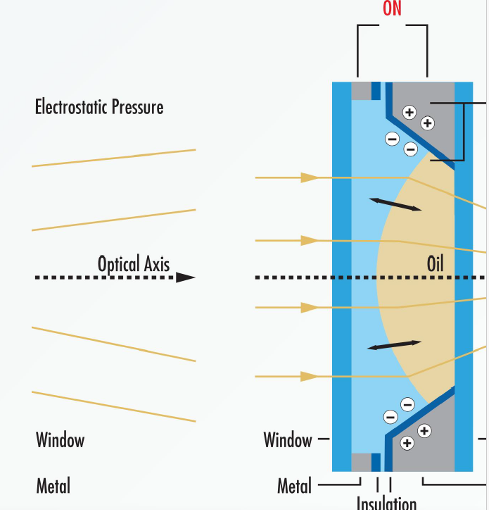
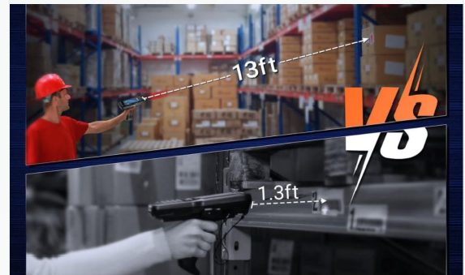
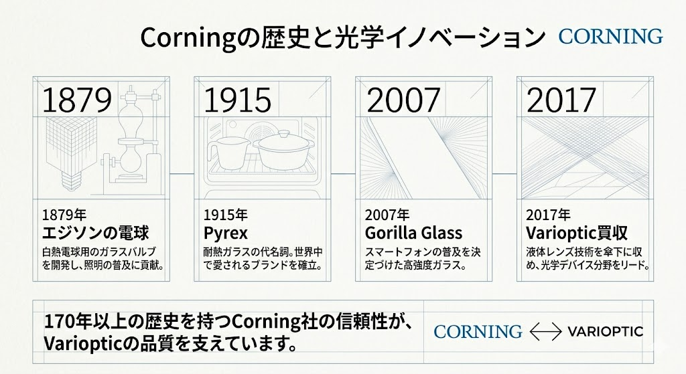
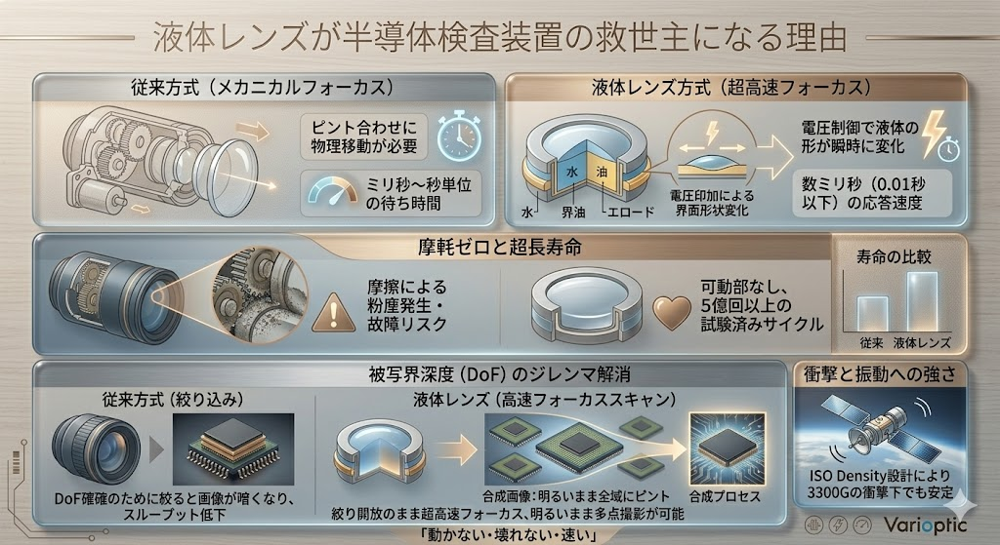
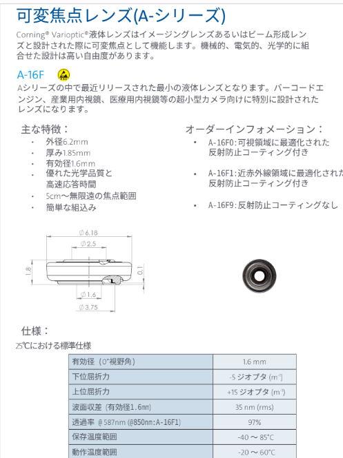
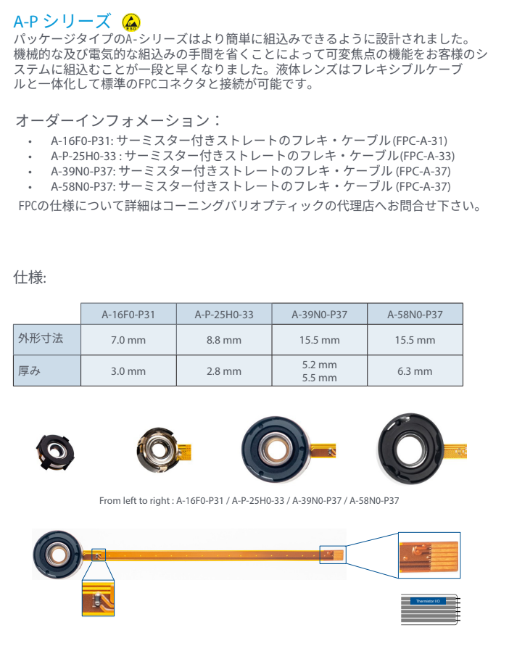

半導体検査装置の
物理的限界と次世代光学戦略
液体レンズ(Varioptic) による高付加価値レトロフィットの提案
液体レンズ(Varioptic) による高付加価値レトロフィットの提案
Section 01
回路線幅が原子数数十個分に達する先端ノードでは、光の波長が解像度を制限する「回折限界」が最大の敵となります。
HBMやチップレット等の3D積層により内部欠陥が隠蔽。これを高精度かつ高速にスキャンする能力が求められています。

電圧印加により水溶液と油の境界面の形を変化させ、ミリ秒単位でピントを調整します。

| 超長寿命 | 摩擦がないため、5億回以上のサイクルに耐えます。 |
|---|---|
| 耐衝撃・振動 | 物理的に動くレンズがなく、3300G / 0.25msの試験をクリア。 |
| 高速応答 | 電圧制御のみで形状が変わる、極めて速い応答（Fast Focus）。 |
| 低消費電力 | 駆動電力はドライバICを含めても40mW未満。 |
ドローン、産業用ロボット、宇宙機などの過酷な環境で採用される決定的な理由です。

Section 03

液体レンズは、産業用アプリケーションで求められる高い光学特性を備えています。標準モデル（A-25H0-AR）において、可視光域で**約97%**という極めて高い透過率を実現しています [cite: 5, 57, 85]。
イメージセンサ、プロセッサ、ドライバICを組み合わせた閉ループ制御により、ミリ秒単位の高速AFを実現します [cite: 7, 111-126]。
※ 物理的な可動部が不要なため、システム全体の小型化と、5億回以上の動作寿命を両立します [cite: 10, 167]。

屈折力の連続制御により「セトリング時間ゼロ」を実現する、液体レンズ独自の高速撮像ソリューション。

図：スウィープ動作中の屈折力変化(青)と波面収差(赤)の推移
従来のモーター駆動のように「移動→静止」を待つ必要がありません。屈折力を流しながら連続撮影を行うため、スループットが劇的に向上します。
無限遠から近距離までピントをスウィープさせながら画像を取得。あらゆる高さの対象物を一瞬で捉え、オンザフライで解析可能です。
動作中も光学性能が安定しているため、2MP以上の高精細センサーのポテンシャルを100%引き出し、精緻なデコードを実現します。
用途に応じ、スウィープの速度やピント範囲をソフトウェア上で自由に変更可能。検査ラインの仕様変更にも即座に対応します。
Variopticのスウィープモードは、物流・半導体検査・バイオメトリクスなど、スピードと精度が同時に求められる現場に革新をもたらします。

従来の光学系では、深い被写界深度（DoF）を得るために絞りを絞り込む必要があり、結果として画像が暗くなるという致命的な欠点がありました。
DoFを稼ぐために絞ると光量が不足。露光時間を延ばすと検査速度（スループット）が低下し、ゲインを上げるとノイズが増大します。
絞りを開放（明るい状態）したまま、ミリ秒単位でピント位置を高速スキャン。 明るい画像のまま多点ピント撮影を行い、空間全体を瞬時に把握します。
5mm〜7mmというシビアなWorking Distance (WD)は、物理的な干渉と解像度の維持が最も困難な領域です。
専用の延長リングにより屈折力範囲をマクロ領域へシフト。5mm近傍の微細な段差に対しても、液体レンズの分解能をフルに活用したピント合わせを可能にします。
液体レンズを絞り近傍に配置することで、ピント調整時も倍率変動をゼロに抑制。計測精度を維持したまま高速スキャンを実現します。

170年以上の歴史を持つCorning社の信頼性が、Variopticの品質を支えています。

従来のメカニカルフォーカスでは不可能だった「超高速・超長寿命・高解像」の両立を、液体レンズが可動部なしで実現。半導体製造の最先端プロセスが抱える物理的限界を打破する、究極の光学ソリューションです。

製品仕様やスウィープモードに関するご質問にAIが回答します。
より詳しい説明や製品についての問い合わせを希望の方は担当者までご連絡ください。
クロニクス株式会社
〒160-0023 東京都新宿区西新宿３－２－１１ 新宿三井ビルディング二号館 904室
TEL: 03-5322-7191 FAX: 03-5322-7790
E-Mail: sales@chronix.co.jp
Section 04
Aシリーズの中で最小の液体レンズです [cite: 881]。バーコードエンジン、産業用内視鏡、医療用デバイスなど、超小型カメラ向けに特別に設計されています [cite: 882]。
| 有効径 | 1.6 mm [cite: 894] |
|---|---|
| 屈折力範囲 | -5 ～ +15 ジオプタ [cite: 894] |
| 波面収差 | 35 nm (rms) [cite: 894] |


A-Pシリーズは、液体レンズをフレキシブルケーブル（FPC）と一体化することで、機械的・電気的な組み込みの手間を大幅に削減します [cite: 955, 962]。
| モデル | 外形寸法 | 厚み |
|---|---|---|
| A-16F0-P31 | 7.0 mm | 3.0 mm |
| A-P-25H0-33 | 8.8 mm | 2.8 mm |
| A-39N0-P37 | 15.5 mm | 5.2 mm |
[データ出典: cite: 969]
サーミスター内蔵: 温度変化に伴う屈折率の補正を可能にするサーミスター付きモデル（FPC-A-31/33/37等）を標準提供しています [cite: 965-968, 971]。
液体レンズの全ラインナップ、詳細スペック、システム統合に関するガイドをPDFでご覧いただけます。
製品カタログ (日本語版) をダウンロードVarioptic® 液体レンズ ソリューション・ブローシャー v19.8 [cite: 707, 708]
物理の壁を、技術で超える。デモ機のご依頼や光学設計のご相談はこちらへ
クロニクス株式会社 半導体ソリューション事業部
www.chronix.co.jp | contact@chronix.co.jp